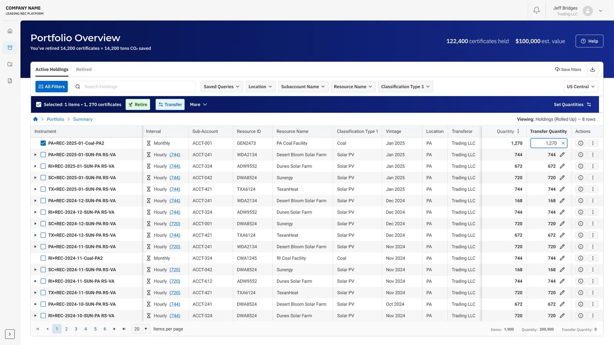
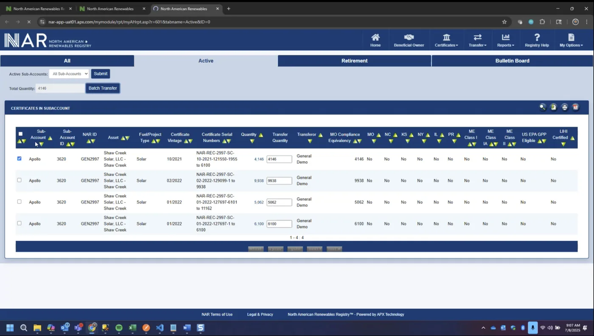
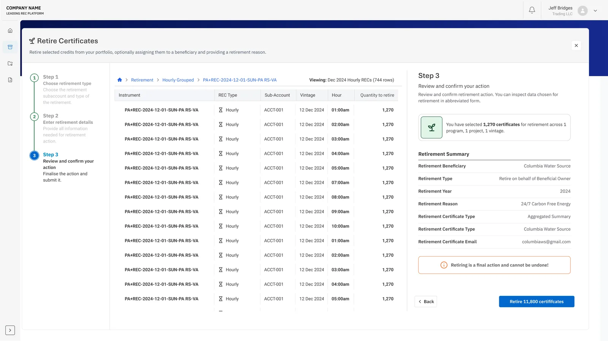
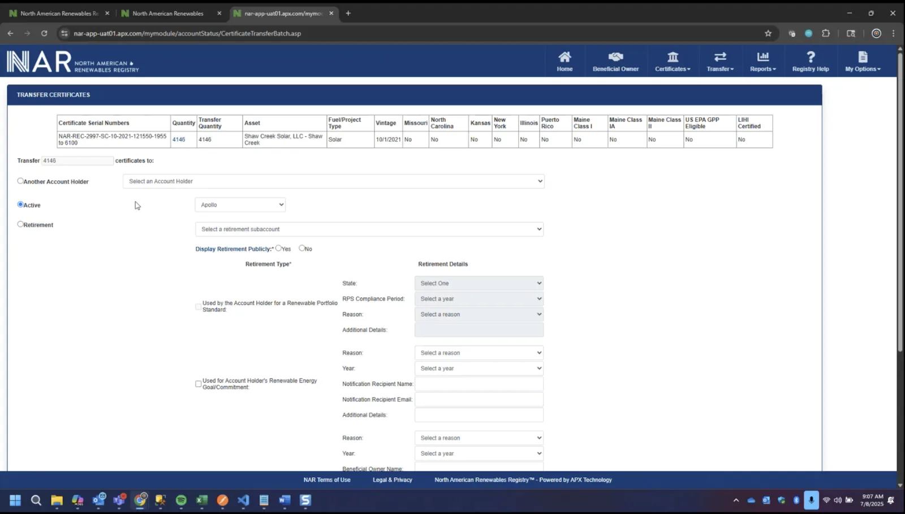

01
No feedback
The system gives virtually no feedback - no action returns a status message or a confirmation.
Product Design · Climate / Renewable-Energy SaaS
A redesign of a 15-year-old renewable-energy certificate registry - its portfolio and its retirement flow - commissioned by one of the world’s largest technology companies.

TL;DR
“Did that go through alright? I don’t know.”
I unified monthly and hourly holdings, moved actions into the holdings context, added scoping and filtering, and designed a guided three-step flow with an explicit completion state and actionable error states - and the uncertainty was gone.
Renewable energy certificates - RECs - are the receipts of the clean-energy economy. One certificate represents one megawatt-hour of renewable power delivered to the grid. When a company retires that certificate, it formally claims that clean energy against its own carbon footprint.
The redesign was commissioned by one of the world’s largest technology companies, funding faster adoption of hourly renewable certificates through its round-the-clock carbon-free energy program. A design partner led the company’s other platform in parallel; engineering owned the frontend build.
Before I started drafting anything, I wanted to understand what I was working with. I spent the first phase of the project in research, learning the concept of renewable energy certificates (RECs).
Then the discovery phase kicked in. The client gave us user stories, and I took part in five shadow sessions and countless syncs to understand what users really do in the platform - and where it fails. Let me tell you, I saw what I came for.
With AI doing the lifting and me doing the sense-making, I synthesized the main flows and the crucial pain points
The system gives virtually no feedback - no action returns a status message or a confirmation.
Retiring a certificate required navigating out of the scoping context - too many steps for a basic action.
Hourly and monthly holdings lived in two separate views, so the user had to decide which one to look at.
There is no way to filter holdings at all. Navigating an enormous list of items means scrolling through it.
With the pain points mapped, ideation became concrete - testing the structure with the people who know it best, sorting the filters people actually reach for, and studying how other products solve the same problems.
Each one answers a specific trust problem - what was considered, what was chosen, and why. The pattern repeats on purpose, so the reasoning stays visible next to the outcome.
Keep active and retired pages separate; preserve the legacy folder tree; or show every certificate row immediately.
A rolled-up unified portfolio with breadcrumb drill-down.
The overview keeps hourly and monthly holdings legible together, while drill-down preserves detail without front-loading hundreds of hourly records.
A global action in navigation; a detached retirement form; or an action embedded in the selected holdings context.
Actions launch from selected holdings.
Selection makes scope visible before the user commits. The action bar can summarize count, quantity, and eligibility in place.
A compact modal; a single long form; or a staged flow with review and acknowledgment.
A guided full-screen, three-step flow.
The sequence creates room to configure, review, and explicitly acknowledge consequences - then ends with an unmistakable outcome.
I built the prototype with AI - an interactive version where the filters, drill-down and retirement behaved like the real product. Then two group sessions, six and seven people, one driver each and the rest watching. Both drivers completed the filter-and-retire task without asking for help.
What the sessions changed
People paused here, so the default became the full quantity - with Set Quantities (max / half / none) for the less common cases.
The same searches kept coming back, so I added a way to save them.
Testing also settled the flow itself: the full-screen, three-step version turned out to be the better fit - for an irreversible action, clarity beats speed.
The redesigned portfolio turns a hard-to-scan table into a workspace. Drag the divider to see the shift.

The portfolio is now a single workspace for both certificate types - monthly groups rolled up into one row, hourly records one drill-down away. The header carries the totals, quick filters and saved queries sit above the table, and the count on a monthly group opens its individual hours through a breadcrumb.


The retirement flow is a three-step overlay - choose a type, enter details, review and confirm. The step that matters most is the review: a summary of exactly what’s about to happen, with a warning that retirement is final - and it ends on a screen that says, unambiguously, that it succeeded.
In their words
“Oh cool, I like this.”
“As far as creating it… I thought that was pretty easy.”
“Saved queries… nice, beautiful.”
The design was built with the components it was specified against - and stayed testable after handoff.
The design was approved with no outstanding concerns and handed off as screens, flows and a prototype; engineering built the frontend on a component library adapted to the brand. What I can point to is qualitative - but four things came out of it that I’d carry into the next high-stakes flow.
Every irreversible action needs a visible result - what happened, what it touched, and what to do next. Silence after a click is the bug, not the absence of one.
A shorter path only helps if the user still knows what they’re about to do. On high-stakes actions a slower, guided flow reads as safer - and that trust is worth more than the saved clicks.
A baseline captured before the redesign is the only way to prove what changed. Without one the strongest evidence stays qualitative - honest, but not measurable.
One person, one task, no audience. A handful of sessions at that stage surfaces friction that group walkthroughs quietly hide - and it costs almost nothing to run.